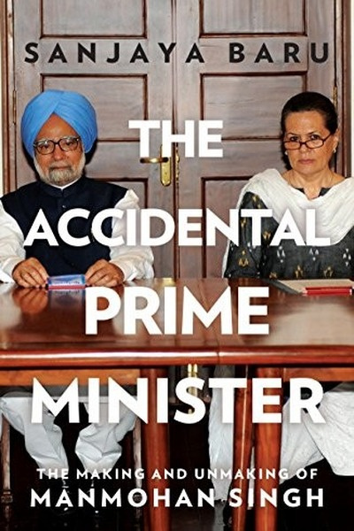

Library › Power & Strategy
The Accidental Prime Minister — Summary & Key Lessons

Inside the PMO with Manmohan Singh — how power actually works at the top of India.
📖 OPEN THE FULL INTERACTIVE BREAKDOWN →🌐 Read it in Hindi, Hinglish, Gujarati, Tamil & 22 more languages — free, with audio.
💡 The Big Idea
Baru's memoir of his years as Manmohan Singh's media adviser pulls back the curtain on India's Prime Minister's Office: how decisions are made, blocked, leaked and spun. The central lesson is systemic: outcomes depend less on the leader's intellect than on who controls the office machinery, the party and the narrative — and a good man in a weak position is still weak.
🧠 The 6 Key Lessons
Lesson 1: The Office Around the Leader Is the Real Power
Chapter 1: The Beginning
Baru's core observation: the Prime Minister's power flows through the PMO — its secretaries, advisors and gatekeepers — and whoever staffs and controls that machinery shapes outcomes. A brilliant leader with a weak or hostile office is neutered; an average leader with a strong office governs. Never judge power by the person in the chair; judge the system around the chair.
📖 Example: Manmohan Singh, an economist of world-class repute, found key decisions influenced by a small circle around him, while party leaders outside the PMO set many political directions. The office, not the man, determined what was possible. Read the full example →
⚡ Do this: Map the 'office around you': who controls your information, calendar and decisions? Strengthen that system even if you're the smartest person in it.
Lesson 2: Narrative Control Is Strategic Control
Chapter 2: The Media
Baru, a journalist turned advisor, shows how the same policy looks different depending on who frames it first. The government that controls the narrative — the story, the timing, the spokesperson — controls the political outcome, regardless of the policy's actual merits. In any organization, the person who frames the message shapes the decision.
📖 Example: The nuclear deal was won diplomatically but nearly lost politically because the narrative was captured by opponents before supporters could frame it; the government spent months recovering ground that framing would have secured upfront. The policy was right;… Read the full example →
⚡ Do this: Before your next important initiative, write the narrative you want others to repeat — one sentence, then share it before your critics do.
Lesson 3: Coalitions Are the Reality of Power
Chapter 3: The Coalition
Manmohan Singh's UPA government was a coalition, which meant every major decision needed negotiation with partners who had different incentives. Baru's lesson: in any distributed power structure, unilateral brilliance fails; the skill is building and managing coalitions — trading, reassuring, and never surprising your allies. Purity is for those who don't need to pass anything.
📖 Example: Land acquisition, food security and the nuclear deal each required months of coalition management — partners extracted concessions, delayed and threatened, and the final outcomes were shaped as much by the trading as by the policy design. The art was keeping… Read the full example →
⚡ Do this: List your key stakeholders and their incentives; before your next move, map what each needs to say yes — and start trading early.
Lesson 4: Loyalty Is a System, Not a Sentiment
Chapter 4: The Inner Circle
Baru documents how trust inside the PMO worked: some advisors had the PM's ear, others were kept at distance, and leaks often came from within. The lesson for any leader: loyalty must be engineered — clear roles, shared information and consequences for betrayal — because sentiment alone collapses under pressure. The people around you will be tested; design for that.
📖 Example: Policy drafts leaked to the press repeatedly during the UPA years, some from inside the PMO itself, forcing defensive postures and damaging trust. Systems that should have contained information were loose, and the leaks shaped more coverage than the policies… Read the full example →
⚡ Do this: Review who holds sensitive information in your world and whether the boundaries around it are designed or accidental.
Lesson 5: The Leader's Calendar Is the Leader's Strategy
Chapter 5: The Schedule
Baru reveals how Manmohan Singh's time was consumed — meetings, visitors, ceremonies — leaving little for strategic thinking, while rivals used their schedules for politics. A leader's calendar is a confession: whoever controls your hours controls your priorities. Guard strategic time like a national resource, because everyone else will happily consume it.
📖 Example: With coalition partners, ministers and visitors filling his days, Singh's space for long-form policy reflection shrank — while more politically minded colleagues invested their hours in relationships and messaging that paid off later. Time allocation was… Read the full example →
⚡ Do this: Audit your calendar for a week: what percentage went to strategy, relationships and renewal versus reactive consumption? Rebalance deliberately.
Lesson 6: History Judges the Record, Not the Image
Chapter 6: The Legacy
Baru ends by noting that Singh's legacy — economic reforms, the nuclear deal, rights-based laws — is being reassessed more favorably over time than contemporary coverage suggested, while image-savvy contemporaries faded. The lesson: in the long run, substance beats spin, and the record outlives the narrative. Build real things; the narrative will eventually catch up.
📖 Example: The 1991 liberalization Singh authored is now universally credited with transforming India, even though the politics of the moment were bitter and the credit was contested. Decades later, the record stood while the contemporary spin evaporated. Read the full example →
⚡ Do this: Ask of your current work: what will the record show in ten years? Invest more in the record, less in the applause.
✅ 5-Step Action Plan
- Map the office system around you — information, calendar, gatekeepers
- Write and share your narrative before critics frame it
- Map stakeholder incentives and start coalition-building early
- Audit who holds sensitive information and tighten the system
- Protect strategic time on your calendar deliberately
⚠️ When This Doesn't Work
⚠️ When this doesn't work: The 'system beats the person' lens can excuse passivity — leaders still matter enormously, and Manmohan Singh's own constraints were partly self-created by not fighting harder for control. Also, treating coalition politics as inevitable can justify abandoning principles. Use the analysis to strengthen your position, not to surrender it.
💀 The Graveyard Proves It
👑 The Nanda Empire — The Richest Empire in India, Lost Because the King Couldn't Keep a Promise. Burn: An empire of legendary wealth — overthrown in a generation. Read the full case study →
💬 Best Quotes from The Accidental Prime Minister
- “The PMO is the real seat of power, and the PM is its most important but not its only occupant.”
- “In politics, perception is not a shadow of reality — it often becomes reality.”
- “A prime minister who cannot choose his own team has already lost half his power.”
Interactive version: mark lessons as read, listen in your language, share quote cards.